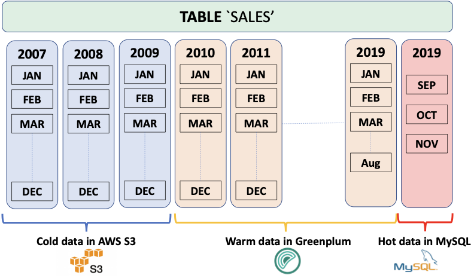

SynxDB Platform Extension Framework (PXF)
With the explosion of data stores and cloud services, data now resides across many disparate systems and in a variety of formats. Often, data is classified both by its location and the operations performed on the data, as well as how often the data is accessed: real-time or transactional (hot), less frequent (warm), or archival (cold).
The diagram below describes a data source that tracks monthly sales across many years. Real-time operational data is stored in MySQL. Data subject to analytic and business intelligence operations is stored in SynxDB. The rarely accessed, archival data resides in AWS S3.

When multiple, related data sets exist in external systems, it is often more efficient to join data sets remotely and return only the results, rather than negotiate the time and storage requirements of performing a rather expensive full data load operation. The SynxDB Platform Extension Framework (PXF), a SynxDB extension that provides parallel, high throughput data access and federated query processing, provides this capability.
With PXF, you can use SynxDB and SQL to query these heterogeneous data sources:
- Hadoop, Hive, and HBase
- Azure Blob Storage and Azure Data Lake Storage Gen2
- AWS S3
- MinIO
- Google Cloud Storage
- SQL databases including Apache Ignite, Hive, MySQL, ORACLE, Microsoft SQL Server, DB2, and PostgreSQL (via JDBC)
- Network file systems
And these data formats:
- Avro, AvroSequenceFile
- JSON
- ORC
- Parquet
- RCFile
- SequenceFile
- Text (plain, delimited, embedded line feeds, fixed width)
Basic Usage
You use PXF to map data from an external source to a SynxDB external table definition. You can then use the PXF external table and SQL to:
- Perform queries on the external data, leaving the referenced data in place on the remote system.
- Load a subset of the external data into SynxDB.
- Run complex queries on local data residing in SynxDB tables and remote data referenced via PXF external tables.
- Write data to the external data source.
Check out the PXF introduction for a high level overview of important PXF concepts.
Get Started Configuring PXF
The SynxDB administrator manages PXF, SynxDB user privileges, and external data source configuration. Tasks include:
- Installing, configuring, starting, monitoring, and troubleshooting the PXF Service.
- Configuring and publishing one or more server definitions for each external data source. This definition specifies the location of, and access credentials to, the external data source.
- Granting SynxDB user access to PXF and PXF external tables.
Get Started Using PXF
A SynxDB user creates a PXF external table that references a file or other data in the external data source, and uses the external table to query or load the external data in SynxDB. Tasks are external data store-dependent:
- See Accessing Hadoop with PXF when the data resides in Hadoop.
- See Accessing Azure, Google Cloud Storage, MinIO, and S3 Object Stores with PXF when the data resides in an object store.
- See Accessing an SQL Database with PXF when the data resides in an external SQL database.